NISEKO, HOKKAIDO — 北の静けさを、形にする
静寂は、
設計できる。
NORR One。音を消すのではなく、雪のように吸う設計。単一車種、単一素材の内装、¥8,900,000から。
モデルを見る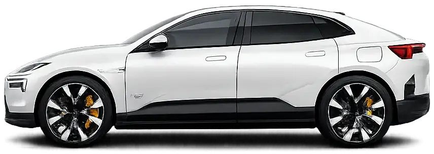
NORR One — 部品からの組立
ASSEMBLY 0%
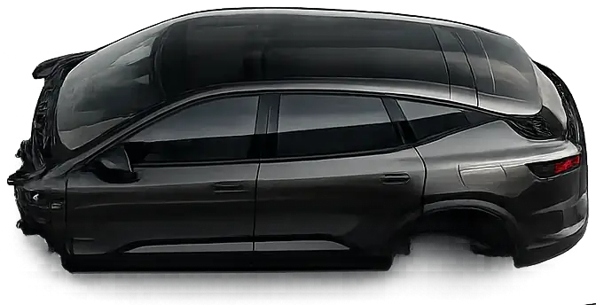
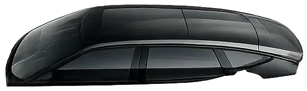
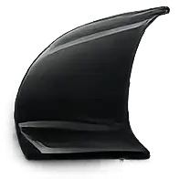
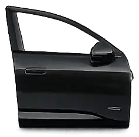
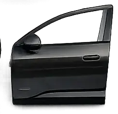
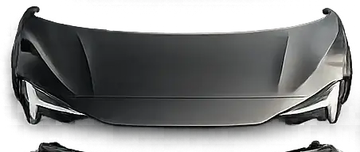
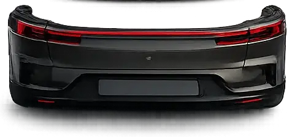
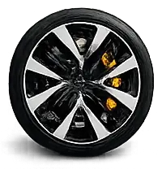
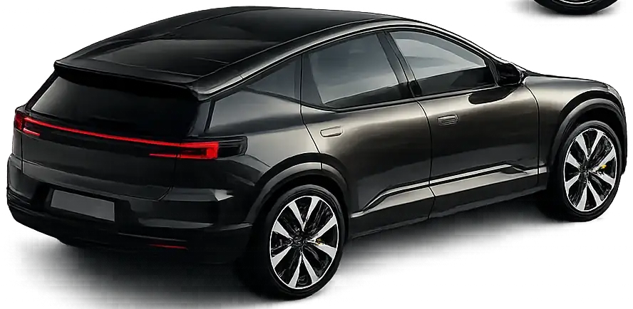
- 01
部品は、41点しかない。
外装パネルは41点。一般的なSUVの6割です。分割線が少ないほど、風切り音の入口も少ない。
- 02
締結は、音のしない順に。
パネルの合わせ目は0.8mm公差。組立の順序は、走行時のきしみ音が最小になる順に決めてあります。
- 03
一台に、なる。
ニセコ工場のラインは1日あたり26台まで。急がないことも、静けさの部品です。
02 — MATERIAL
内装は、
1種類の素材でできている。
プラスチック、本革、金属、7種の異素材を貼り合わせてきた自動車の内装を、NORRはウール混紡の単一素材にまとめました。理由は美しさではなく、10年後に分解できるようにするためです。
01
再生ウール84%
ニセコ近郊の羊毛と、廃漁網から再生した繊維を混紡。染色は無漂白の6色のみ。
02
ネジ0本の内装パネル
接着剤とネジを使わず、すべて嵌合構造。分解に工具は要りません、手だけで外れます。
03
7年で、また羊毛に戻る
内装の耐用年数は7年と正直に設計。摩耗した個体は引き取り、繊維に戻して次の内装になります。
03 — COLOUR
色は、4つ。
それに、1つだけ逸脱を。
全21色から選ぶ配色は、結局同じ3色に集約されると気づきました。だから基本は4色だけ。ただし年に一度、静けさを少しだけ破る特別仕様も用意しています。
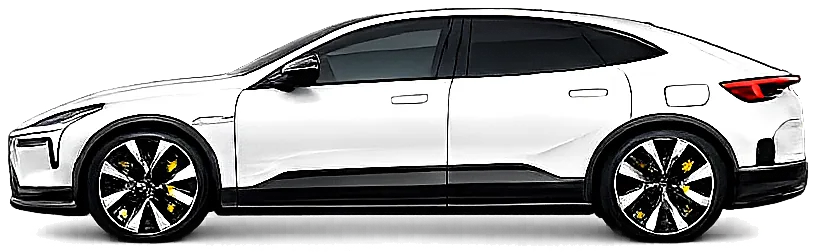
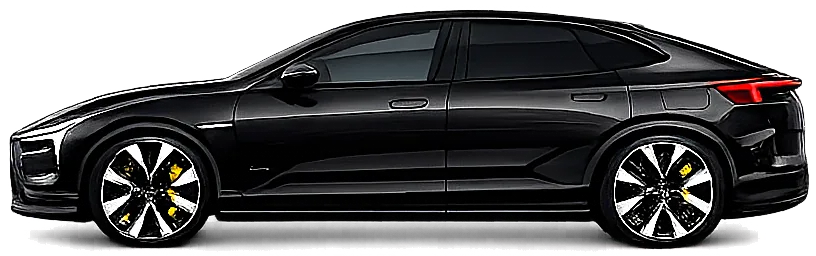
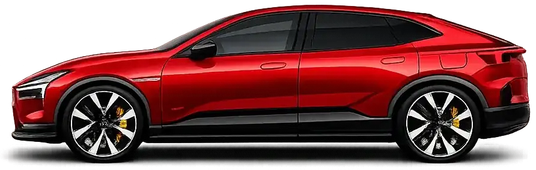
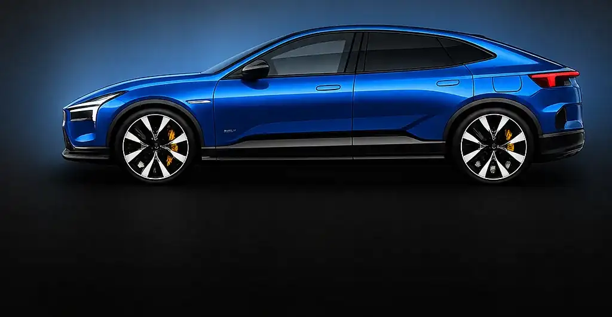
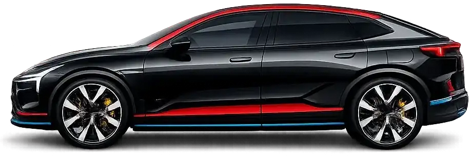
04 — SPECIFICATIONS
数字は、少ない方がいい。
嘘がないので。
- 0km一充電航続距離（WLTC）
- 0空気抵抗係数 Cd
- 0s0-100km/h 加速
- 0kW最高出力（476PS）
- 0kWhバッテリー総電力量
- 0mm全高
社内計測値。航続距離は空調オフ・単独乗車時。積雪路でのバッテリー予熱機能により、氷点下でも実測値の低下は平均8%に抑えています。
05 — TEST DRIVE
雪道でこそ、
静けさはわかる。
試乗コースはニセコ、圧雪路を含む約35分です。タイヤと路面の会話以外、何も聞こえないことを確かめてください。冬季は積雪路試乗、夏季はニセコパノラマラインを走ります。
- 集合
- NORR ニセコショールーム（倶知安駅から送迎15分）
- コース
- ニセコ市街〜パノラマライン 約22km / 35分
- 枠
- 毎日 10:00 / 13:00 / 15:30（積雪期は10:00 / 13:30）